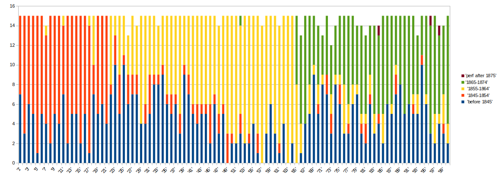
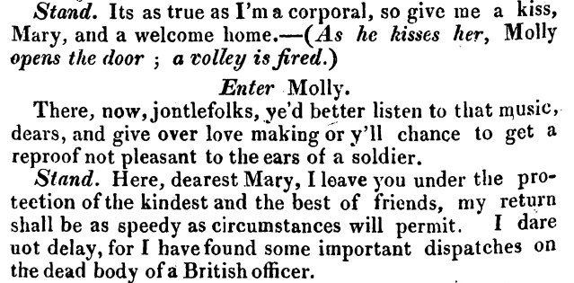
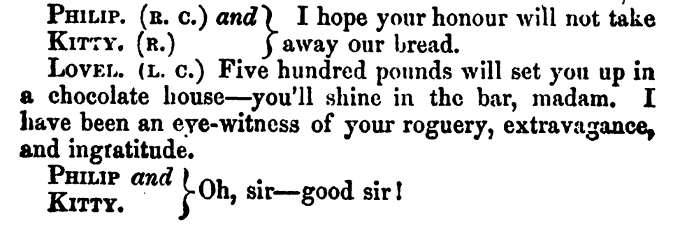
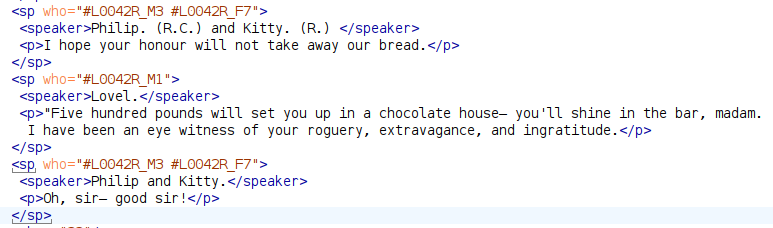
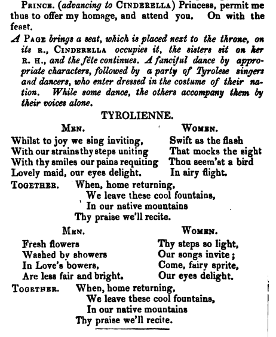
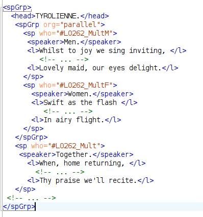

"The most perfect edition of plays ever published": the Digital Lacy project
Lou Burnard (Independent Scholar)
Thomas Hailes Lacy (1809-1873)
With only modest success as a playwright and actor initially, Lacy eventually became the leading theatrical publisher of "Acting Editions" -- practical working documents printed at 6d a copy for individual titles, or 5s for a bound volume of 15 titles.
Between 1848 and 1873, his Lacy's Acting Edition of Plays, grew to contain 100 volumes of 15 titles each: it was sold across the globe, and made him a reasonable fortune.
The LAE is a unique sample, apparently covering the full range of Victorian Theatrical presentations
For comparison, vols 4 and 5 of Allardyce Nicoll's magisterial History of English Drama list c. 24,000 distinct titles performed between 1800 and 1900.
How representative is this sample?
A corpus is a sample, hopefully representative of a known population. Initial comparisons between the LAE and Allardyce Nicoll's Handlists suggest distributions of size, age, and mode are comparable.

First performance dates by volume
"It is hard to avoid the conclusion that Lacy astutely leavened the mix for each volume, using mainly contemporary titles to complement the old favourites." (cf. How old are these plays?)
Digital Lacy project
Builds on and expands data from Richard Pearson's Victorian Plays Project (VPP), AHRB funded 2005-2007
The VPP produced a catalogue of the LAE, along with c. 15000 page images from a copy held at Birmingham Library
These were OCRd, proofed, and made available in a PDF format as visually faithful as possible to the original
By 2014, the project had processed 340 titles which were distributed from a site at the University of Galway
Following Pearson's death in 2018, the project was frozen; by June 2022 the website had disappeared...
In 2022, with the aid of researchers who worked on the project, I recovered most of the resources it had created and archived them on github
Digital Lacy now combines :
a detailed and expanding set of metadata relating to the LAE and its authors, enhanced with links to available digital versions
TEI schema defined by ODD very close to dracor-schema
Impossible without manual intervention!
How close ?
Dracor and Lacy have a few ideological differences...
In DraCor metadata, the digital version is primary, any source version being nested within it; in Lacy, that hierarchy is reversed.
Some DraCor metadata (notably performances and identifiers) is relegated to a <standOff>; in Lacy it is imbricated in the TEI Header
Dracor uses explicit scene divisions to define stage-presence, as the basis for its network analysis; a quarter of Lacy titles don't have scene divisions.
Lacy uses many of the available TEI tags for the front matter of a play ; Dracor largely ignores this.
Lacy makes explicit that role is gendered (not supported by Dracor ODD)
However - the Dracor team is very responsive and helpful !
Just a few tagging headaches
These texts often push the constraints
speaker may be implicit
speaker may be multiple person
musical numbers (<spGrp>) don't tesselate and may self-nest
Implied speaker

Speeches assigned to multiple speakers

(<stage> not currently permitted within <speaker>)
Nesting of simultaneous speech or song


The whole dance (the Tyrolienne) is contained by a <spGrp> element which contains two nested <spGrp> elements, each containing two <sp> elements to be performed in parallel. (See also TEI Issue 2695)
Tentative suggestions and conclusions
TEI conformance is crucial to the interoperability of Dracor corpora. The Dracor profile/ODD should specify which parts of the TEI model are mandatory, desirable, permissible, unsupported ...
The documentation provided by the Dracor ODD is good, but could be improved: more examples and more discussion of some edge cases would be useful for example
Simple tutorial guides showing how to use Dracor-conformant corpora with a variety of tools (not only python, plz)
Provide a forum for corpus creators to discuss possible solutions to common encoding problems